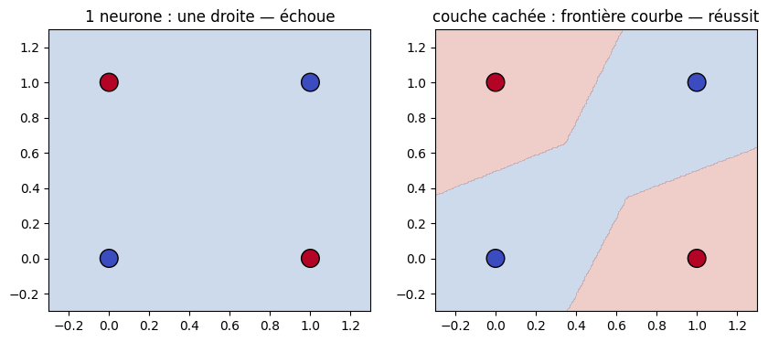
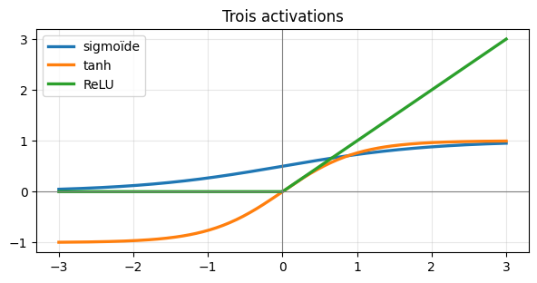
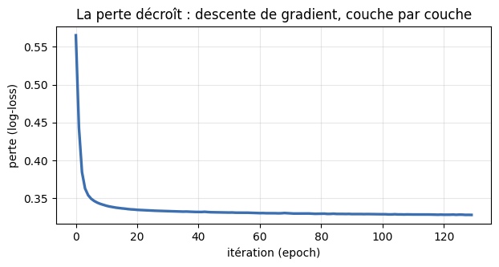
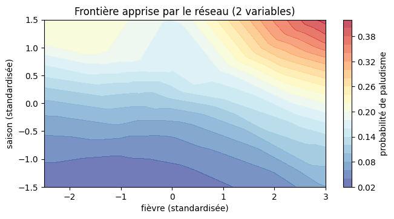
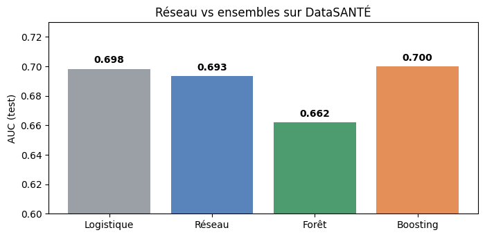

import numpy as np
import pandas as pd
import matplotlib.pyplot as plt
np.set_printoptions(precision=4, suppress=True)
print("Outils prêts.")Outils prêts.Dr. El Hadji Bassirou TOURÉ · DMI · FST · UCAD
Ce TP montre, en code, que le neurone artificiel est la régression logistique de la Séance 6, puis construit l’intuition des couches (le problème XOR), vérifie pourquoi l’activation non-linéaire est indispensable, et entraîne un vrai réseau avec MLPClassifier. On termine par le verdict honnête : sur nos données tabulaires, le réseau bat-il les méthodes d’ensemble de la Séance 8 ?
Durée estimée : 1h15. Exécuter les cellules dans l’ordre.
Outils prêts.# Générateur officiel DataSANTÉ-221 (ne pas modifier)
def generate_datasante221(n=10_000, seed=221):
rng = np.random.default_rng(seed)
age = np.clip(rng.gamma(2.5, 14, n), 5, 85).round(0).astype(int)
glycemie = np.clip(rng.normal(5.5 + 0.05*age, 1.8), 3.0, 18.0).round(1)
hemoglobine = np.clip(rng.normal(12.5 - 0.02*age, 1.5), 6.0, 17.0).round(1)
fievre = np.clip(rng.normal(37.5, 0.9, n), 36.0, 41.5).round(1)
saison = rng.choice([0, 1], size=n, p=[0.55, 0.45])
duree = (1.0 + 0.05*age + 0.6*glycemie - 0.3*hemoglobine
+ 1.5*saison + rng.normal(0, 1.8, n)).clip(0.5, 30).round(1)
proba_palu = 1/(1+np.exp(-(-3 + 1.5*saison + 0.8*(fievre>38.5))))
palu = (rng.uniform(0,1,n) < proba_palu).astype(int)
return pd.DataFrame({'age':age,'glycemie':glycemie,'hemoglobine':hemoglobine,
'fievre':fievre,'saison':saison,
'duree_hospit_j':duree,'paludisme':palu})
df = generate_datasante221()
colonnes = ["age", "glycemie", "hemoglobine", "fievre", "saison"]
print("dimensions :", df.shape)dimensions : (10000, 7)Un neurone fait deux gestes : une somme pondérée des entrées, puis une activation. Codons-le et vérifions qu’il s’agit de la régression logistique de la Séance 6.
# La fonction d'activation sigmoïde (vue en Séance 6)
def sigmoide(z):
return 1 / (1 + np.exp(-z))
# Un neurone : somme pondérée puis activation
def neurone(x, w, b, activation=sigmoide):
z = np.dot(w, x) + b # somme pondérée
return activation(z) # activation
# Un patient : 3 entrées standardisées, poids et biais donnés
x = np.array([1.2, -0.5, 2.0])
w = np.array([0.8, -1.5, 0.6])
b = -0.7
z = np.dot(w, x) + b
a = sigmoide(z)
print(f"somme pondérée z = {z:.3f}")
print(f"activation a = {a:.4f} (probabilité {a:.1%})")somme pondérée z = 2.210
activation a = 0.9011 (probabilité 90.1%)Lecture. \(z = 0{,}96 + 0{,}75 + 1{,}20 - 0{,}70 = 2{,}21\), puis sigmoïde\((2{,}21) = 0{,}90\). Le neurone répond une probabilité de \(90\,\%\).
# Vérifions que c'est EXACTEMENT la régression logistique de scikit-learn
from sklearn.linear_model import LogisticRegression
# on fabrique un mini-jeu et on FORCE les mêmes poids pour comparer le calcul
# (ici on vérifie juste que predict_proba applique bien sigmoïde(w·x + b))
logit = LogisticRegression()
logit.coef_ = w.reshape(1, -1)
logit.intercept_ = np.array([b])
logit.classes_ = np.array([0, 1])
proba_sklearn = logit.predict_proba(x.reshape(1, -1))[0, 1]
print(f"notre neurone : {a:.4f}")
print(f"sklearn logistic: {proba_sklearn:.4f}")
print("identiques — un neurone sigmoïde EST une régression logistique.")notre neurone : 0.9011
sklearn logistic: 0.9011
identiques — un neurone sigmoïde EST une régression logistique.Exercice. Un neurone à deux entrées, poids \(w = (1{,}0,\ -2{,}0)\), biais \(b = 0{,}5\), avec activation ReLU (\(\max(0, z)\)). Calculer sa sortie pour \(x = (2{,}0,\ 1{,}0)\) puis pour \(x = (0{,}0,\ 1{,}0)\).
Plusieurs neurones côte à côte forment une couche. Leurs poids se rangent dans une matrice W (une ligne par neurone, une colonne par entrée), comme la matrice X de la Séance 3. Le calcul de toute la couche tient en une opération : z = W·x + b.
# Une couche de 3 neurones sur 4 entrées, avec de vrais chiffres
x = np.array([1.0, 2.0, 0.0, 3.0]) # 4 entrées
W = np.array([[ 0.5, -1.0, 2.0, 0.0], # poids du neurone 1
[ 1.0, 0.5, -0.5, 1.0], # poids du neurone 2
[-1.0, 2.0, 0.0, 0.5]]) # poids du neurone 3
b = np.array([0.5, -1.0, 1.0]) # un biais par neurone
print("forme de W :", W.shape, "(3 neurones x 4 entrées)")
print("forme de x :", x.shape)
z = W @ x + b # les 3 sommes pondérées d'un coup
print("z = W·x + b =", z)forme de W : (3, 4) (3 neurones x 4 entrées)
forme de x : (4,)
z = W·x + b = [-1. 4. 5.5]Lecture. Le produit W @ x calcule les trois sommes pondérées simultanément. Vérifions le détail du premier neurone à la main.
ligne 1 de W : [ 0.5 -1. 2. 0. ]
z1 = (0.5)(1) + (-1)(2) + (2)(0) + (0)(3) + 0.5 = -1.0
a = sigmoide(z) = [0.2689 0.982 0.9959]Exercice. Ajouter un quatrième neurone de poids (2, 0, 1, -1) et de biais 0 à la couche : empiler sa ligne dans W (avec np.vstack) et ajouter son biais, puis recalculer z et a pour la couche à 4 neurones.
Un neurone seul ne trace qu’une droite. Montrons qu’il échoue sur XOR, là où un réseau avec une couche cachée réussit.
(0, 0) -> 0
(0, 1) -> 1
(1, 0) -> 1
(1, 1) -> 0# Un seul neurone (régression logistique) : il échoue
logit = LogisticRegression().fit(X_xor, y_xor)
print(f"1 neurone (logistique) : accuracy = {logit.score(X_xor, y_xor):.2f} (hasard)")
# Un réseau avec une couche cachée : il réussit
from sklearn.neural_network import MLPClassifier
mlp = MLPClassifier(hidden_layer_sizes=(8,), activation="relu",
max_iter=5000, random_state=0).fit(X_xor, y_xor)
print(f"réseau 1 couche cachée : accuracy = {mlp.score(X_xor, y_xor):.2f}")
print(f" prédictions : {mlp.predict(X_xor).tolist()} (cible {y_xor.tolist()})")1 neurone (logistique) : accuracy = 0.50 (hasard)
réseau 1 couche cachée : accuracy = 1.00
prédictions : [0, 1, 1, 0] (cible [0, 1, 1, 0])# Visualisons les deux frontières de décision
fig, axes = plt.subplots(1, 2, figsize=(10, 4))
xx, yy = np.meshgrid(np.linspace(-0.3, 1.3, 200), np.linspace(-0.3, 1.3, 200))
# logistique (droite)
Zl = logit.predict(np.c_[xx.ravel(), yy.ravel()]).reshape(xx.shape)
axes[0].contourf(xx, yy, Zl, alpha=0.25, levels=[-0.5,0.5,1.5], colors=["#3b6fb0","#c0392b"])
axes[0].scatter(X_xor[:,0], X_xor[:,1], c=y_xor, cmap="coolwarm", s=200, edgecolors="k")
axes[0].set_title("1 neurone : une droite — échoue")
# réseau (frontière courbe)
Zm = mlp.predict(np.c_[xx.ravel(), yy.ravel()]).reshape(xx.shape)
axes[1].contourf(xx, yy, Zm, alpha=0.25, levels=[-0.5,0.5,1.5], colors=["#3b6fb0","#c0392b"])
axes[1].scatter(X_xor[:,0], X_xor[:,1], c=y_xor, cmap="coolwarm", s=200, edgecolors="k")
axes[1].set_title("couche cachée : frontière courbe — réussit")
plt.show()
Lecture. Le neurone seul ne dispose que d’une droite : impossible de séparer le damier XOR. La couche cachée combine plusieurs droites en une frontière courbe qui isole chaque classe. C’est tout l’apport de la profondeur.
Empiler deux couches linéaires (sans activation) ne donne rien de plus qu’une seule couche. Vérifions-le en code.
# Deux couches LINÉAIRES (sans activation)
W1 = np.array([[2., 1.], [0., 3.]]); b1 = np.array([1., -1.])
W2 = np.array([[1., -2.]]); b2 = np.array([0.5])
x_demo = np.array([1.0, 2.0])
# calcul couche par couche
h = W1 @ x_demo + b1 # couche 1 (pas d'activation)
sortie_2couches = W2 @ h + b2 # couche 2
# couche unique équivalente : W2·W1 et W2·b1 + b2
W_eq = W2 @ W1
b_eq = W2 @ b1 + b2
sortie_1couche = W_eq @ x_demo + b_eq
print(f"deux couches linéaires : {sortie_2couches}")
print(f"une couche équivalente : {sortie_1couche}")
print(f"W équivalent = {W_eq}, b équivalent = {b_eq}")
print("IDENTIQUES : sans activation, empiler ne sert à rien.")deux couches linéaires : [-4.5]
une couche équivalente : [-4.5]
W équivalent = [[ 2. -5.]], b équivalent = [3.5]
IDENTIQUES : sans activation, empiler ne sert à rien.# Les trois activations usuelles, tracées
z = np.linspace(-3, 3, 200)
plt.figure(figsize=(7, 3.2))
plt.plot(z, sigmoide(z), label="sigmoïde", lw=2.4)
plt.plot(z, np.tanh(z), label="tanh", lw=2.4)
plt.plot(z, np.maximum(0, z), label="ReLU", lw=2.4)
plt.axhline(0, color="gray", lw=0.8); plt.axvline(0, color="gray", lw=0.8)
plt.legend(); plt.grid(alpha=0.3); plt.title("Trois activations")
plt.show()
Lecture. Les deux couches linéaires donnent exactement la même sortie que la couche unique équivalente. C’est la non-linéarité (ReLU, sigmoïde, tanh) glissée entre les couches qui donne au réseau sa puissance — sans elle, la profondeur est une illusion.
On code la propagation avant et la rétropropagation sur le petit réseau 2-2-1 du cours, puis on vérifie les gradients par différences finies — le réflexe pour valider toute implémentation de backprop.
# Le réseau 2-2-1 du cours (mêmes poids)
x = np.array([1.0, 0.0]) # entrée
W1 = np.array([[0.5, 0.1], [-0.3, 0.8]]) # (2 cachés, 2 entrées)
b1 = np.array([0.1, -0.2])
W2 = np.array([0.4, -0.6]) # (1 sortie, 2 cachés)
b2 = 0.2
y = 1.0 # cible
def forward(x, W1, b1, W2, b2):
z1 = W1 @ x + b1
a1 = sigmoide(z1)
z2 = W2 @ a1 + b2
a2 = sigmoide(z2)
return z1, a1, z2, a2
z1, a1, z2, a2 = forward(x, W1, b1, W2, b2)
L = -(y*np.log(a2) + (1-y)*np.log(1-a2))
print(f"a1 = {a1.round(4)}")
print(f"y_hat = {a2:.4f} perte L = {L:.4f}")a1 = [0.6457 0.3775]
y_hat = 0.5577 perte L = 0.5840# Rétropropagation : les 4 équations du cours
def dsigmoide(a):
return a * (1 - a) # dérivée en fonction de la sortie a
# (1) erreur de sortie
delta2 = a2 - y
# (3-4) gradients couche de sortie
dW2 = delta2 * a1
db2 = delta2
# (2) erreur rétropropagée vers la couche cachée
delta1 = (W2 * delta2) * dsigmoide(a1)
# (3-4) gradients couche cachée
dW1 = np.outer(delta1, x)
db1 = delta1
print(f"delta2 = y_hat - y = {delta2:.4f}")
print(f"dL/dW2 = {dW2.round(4)}")
print(f"delta1 = {delta1.round(4)}")
print(f"dL/dW1 =\n{dW1.round(4)}")delta2 = y_hat - y = -0.4423
dL/dW2 = [-0.2856 -0.167 ]
delta1 = [-0.0405 0.0624]
dL/dW1 =
[[-0.0405 -0. ]
[ 0.0624 0. ]]Vérifions par différences finies. On perturbe chaque poids de \(\varepsilon\) et on mesure la variation de perte : si le backprop est correct, les deux coïncident.
# Test du gradient : backprop vs différence finie
def perte(W1, b1, W2, b2):
_, _, _, a2 = forward(x, W1, b1, W2, b2)
return -(y*np.log(a2) + (1-y)*np.log(1-a2))
eps = 1e-6
# vérif sur W2[0]
W2p = W2.copy(); W2p[0] += eps; Lp = perte(W1, b1, W2p, b2)
W2m = W2.copy(); W2m[0] -= eps; Lm = perte(W1, b1, W2m, b2)
num = (Lp - Lm) / (2*eps)
print(f"dL/dW2[0] : backprop = {dW2[0]:.6f} diff. finie = {num:.6f}")
print(f" écart = {abs(dW2[0]-num):.2e} -> backprop CORRECT")dL/dW2[0] : backprop = -0.285589 diff. finie = -0.285589
écart = 5.77e-11 -> backprop CORRECT# Un pas de descente de gradient : la perte baisse-t-elle ?
eta = 0.5
W2_new = W2 - eta*dW2
b2_new = b2 - eta*db2
W1_new = W1 - eta*dW1
b1_new = b1 - eta*db1
L_new = perte(W1_new, b1_new, W2_new, b2_new)
print(f"perte avant le pas : {L:.4f}")
print(f"perte après le pas : {L_new:.4f}")
print(f"baisse : {L - L_new:.4f}")perte avant le pas : 0.5840
perte après le pas : 0.4414
baisse : 0.1426Lecture. Le backprop calculé à la main coïncide avec les différences finies (écart \(\sim 10^{-10}\)) : la dérivation est exacte. Et un seul pas de descente de gradient fait chuter la perte de \(0{,}584\) à \(0{,}441\) — le réseau a appris. MLPClassifier fait exactement cela, en boucle sur des milliers d’exemples.
Exercice. Modifier la cible en y = 0 (au lieu de 1) et recalculer delta2, dW2 et la perte. Le signe de delta2 change-t-il ? Que cela signifie-t-il pour la correction des poids ?
Entraînons un MLPClassifier sur le paludisme. Standardisation obligatoire (rappel Séance 9 : un réseau y est très sensible).
from sklearn.model_selection import train_test_split
from sklearn.preprocessing import StandardScaler
from sklearn.metrics import roc_auc_score
X = df[colonnes].values
y = df["paludisme"].values
X_train, X_test, y_train, y_test = train_test_split(
X, y, test_size=0.25, random_state=42, stratify=y)
# standardisation OBLIGATOIRE pour le réseau
scaler = StandardScaler().fit(X_train)
X_train_s = scaler.transform(X_train)
X_test_s = scaler.transform(X_test)
print("données prêtes et standardisées.")données prêtes et standardisées.# Entraîner le réseau (deux couches cachées : 16 puis 8 neurones)
reseau = MLPClassifier(hidden_layer_sizes=(16, 8), activation="relu",
max_iter=1000, random_state=0)
reseau.fit(X_train_s, y_train)
acc = reseau.score(X_test_s, y_test)
auc = roc_auc_score(y_test, reseau.predict_proba(X_test_s)[:, 1])
print(f"accuracy test : {acc:.3f}")
print(f"AUC test : {auc:.3f}")accuracy test : 0.882
AUC test : 0.693# La courbe de perte : la descente de gradient en action (Séance 5)
plt.figure(figsize=(7, 3.2))
plt.plot(reseau.loss_curve_, color="#3b6fb0", lw=2.4)
plt.xlabel("itération (epoch)"); plt.ylabel("perte (log-loss)")
plt.title("La perte décroît : descente de gradient, couche par couche")
plt.grid(alpha=0.3)
plt.show()
print(f"perte initiale : {reseau.loss_curve_[0]:.3f} -> finale : {reseau.loss_curve_[-1]:.3f}")
perte initiale : 0.565 -> finale : 0.328Lecture. La perte chute puis se stabilise : le réseau a convergé. C’est la même courbe descendante que la descente de gradient de la Séance 5, sur un modèle plus gros.
Exercice. Entraîner un MLPClassifier avec une seule couche cachée de \(4\) neurones (hidden_layer_sizes=(4,)) sur X_train_s, et afficher son accuracy sur le test.
Comparons un réseau entraîné SUR données standardisées vs SANS standardisation, pour voir l’effet concret.
# Le même réseau, avec et sans standardisation
reseau_avec = MLPClassifier(hidden_layer_sizes=(16,8), activation="relu",
max_iter=1000, random_state=0).fit(X_train_s, y_train)
reseau_sans = MLPClassifier(hidden_layer_sizes=(16,8), activation="relu",
max_iter=1000, random_state=0).fit(X_train, y_train)
auc_avec = roc_auc_score(y_test, reseau_avec.predict_proba(X_test_s)[:,1])
auc_sans = roc_auc_score(y_test, reseau_sans.predict_proba(X_test)[:,1])
print(f"AUC AVEC standardisation : {auc_avec:.3f}")
print(f"AUC SANS standardisation : {auc_sans:.3f}")
print(f"perte finale avec : {reseau_avec.loss_curve_[-1]:.3f} | sans : {reseau_sans.loss_curve_[-1]:.3f}")AUC AVEC standardisation : 0.693
AUC SANS standardisation : 0.673
perte finale avec : 0.328 | sans : 0.336Lecture. Sans standardisation, le réseau apprend moins bien (perte plus haute, AUC dégradée) : les variables à grande échelle (l’âge, jusqu’à 85) écrasent les autres dans la descente de gradient. C’est exactement le piège de l’échelle vu en Séance 9 — mais un réseau y est encore plus sensible qu’un autre modèle. Toujours standardiser avant un réseau.
Un réseau plus gros est-il un réseau meilleur ? Testons plusieurs architectures.
# Effet de la taille de la couche cachée sur l'accuracy
for taille in [(2,), (8,), (16,), (32,), (16, 8)]:
m = MLPClassifier(hidden_layer_sizes=taille, activation="relu",
max_iter=800, random_state=0).fit(X_train_s, y_train)
print(f" couche(s) {str(taille):<10} : accuracy = {m.score(X_test_s, y_test):.3f}") couche(s) (2,) : accuracy = 0.882
couche(s) (8,) : accuracy = 0.882
couche(s) (16,) : accuracy = 0.882
couche(s) (32,) : accuracy = 0.882
couche(s) (16, 8) : accuracy = 0.882Lecture. L’accuracy plafonne à \(0{,}882\) quelle que soit la taille : sur ces données, agrandir le réseau n’apporte rien. La capacité utile dépend de la complexité des données, pas de l’ambition du modèle.
Pour voir ce qu’un réseau capture, entraînons-le sur deux variables seulement (fièvre et saison) et traçons sa frontière de décision.
# Réseau sur 2 variables (fièvre, saison) pour visualiser la frontière
deux = ["fievre", "saison"]
X2 = df[deux].values
X2_train, X2_test, y2_train, y2_test = train_test_split(
X2, y, test_size=0.25, random_state=42, stratify=y)
sc2 = StandardScaler().fit(X2_train)
X2_train_s, X2_test_s = sc2.transform(X2_train), sc2.transform(X2_test)
mlp2 = MLPClassifier(hidden_layer_sizes=(16,8), activation="relu",
max_iter=1000, random_state=0).fit(X2_train_s, y2_train)
# grille de décision (en unités standardisées)
xx, yy = np.meshgrid(np.linspace(-2.5, 3, 200), np.linspace(-1.5, 1.5, 60))
Z = mlp2.predict_proba(np.c_[xx.ravel(), yy.ravel()])[:,1].reshape(xx.shape)
plt.figure(figsize=(7.5, 3.6))
plt.contourf(xx, yy, Z, levels=20, cmap="RdYlBu_r", alpha=0.7)
plt.colorbar(label="probabilité de paludisme")
plt.xlabel("fièvre (standardisée)"); plt.ylabel("saison (standardisée)")
plt.title("Frontière apprise par le réseau (2 variables)")
plt.show()
Lecture. Le réseau a appris une zone de probabilité élevée pour les fièvres hautes ET la saison des pluies — cohérent avec la médecine et avec ce que les modèles précédents trouvaient. Sur deux variables, sa frontière reste simple : la richesse d’un réseau ne se révèle que sur des données autrement plus complexes que les nôtres.
La question décisive : sur nos données tabulaires, le réseau fait-il mieux que les méthodes d’ensemble de la Séance 8 ? Comparons honnêtement, mêmes données, même juge (AUC).
# Quatre modèles, comparés sur le même test
from sklearn.ensemble import RandomForestClassifier, GradientBoostingClassifier
# 1 neurone (Séance 6)
logit = LogisticRegression(max_iter=1000).fit(X_train_s, y_train)
# réseau (Séance 10)
mlp = MLPClassifier(hidden_layer_sizes=(16, 8), activation="relu",
max_iter=1000, random_state=0).fit(X_train_s, y_train)
# forêt (Séance 8) — pas besoin de standardiser
rf = RandomForestClassifier(n_estimators=300, random_state=0).fit(X_train, y_train)
# boosting (Séance 8)
gb = GradientBoostingClassifier(random_state=0).fit(X_train, y_train)
resultats = {
"Régression logistique (1 neurone)": roc_auc_score(y_test, logit.predict_proba(X_test_s)[:,1]),
"Réseau (MLP 16-8)": roc_auc_score(y_test, mlp.predict_proba(X_test_s)[:,1]),
"Random Forest": roc_auc_score(y_test, rf.predict_proba(X_test)[:,1]),
"Gradient Boosting": roc_auc_score(y_test, gb.predict_proba(X_test)[:,1]),
}
for nom, score in resultats.items():
print(f" {nom:<35} AUC = {score:.3f}") Régression logistique (1 neurone) AUC = 0.698
Réseau (MLP 16-8) AUC = 0.693
Random Forest AUC = 0.662
Gradient Boosting AUC = 0.700# Visualisons le comparatif
fig, ax = plt.subplots(figsize=(8, 3.6))
noms = list(resultats.keys())
scores = list(resultats.values())
couleurs = ["#8a8f98", "#3b6fb0", "#2e8b57", "#e07b39"]
bars = ax.bar(range(len(noms)), scores, color=couleurs, alpha=0.85)
for bar, s in zip(bars, scores):
ax.text(bar.get_x()+bar.get_width()/2, s+0.004, f"{s:.3f}",
ha="center", fontweight="bold")
ax.set_xticks(range(len(noms)))
ax.set_xticklabels(["Logistique", "Réseau", "Forêt", "Boosting"])
ax.set_ylabel("AUC (test)"); ax.set_ylim(0.6, 0.73)
ax.set_title("Réseau vs ensembles sur DataSANTÉ")
plt.show()
Lecture — la leçon de la séance. Les quatre modèles se tiennent dans un mouchoir : le gradient boosting (\(0{,}700\)) et même la simple régression logistique (\(0{,}698\)) font aussi bien ou mieux que le réseau (\(0{,}693\)). Sur données tabulaires, le réseau n’est pas magique : il égale au mieux des modèles plus simples, pour bien plus de complexité et de temps de réglage.
Ce n’est pas un accident : sur les données tabulaires, les méthodes d’ensemble (forêts, boosting, XGBoost) sont régulièrement aussi bonnes ou meilleures que les réseaux. Le réseau gagne ailleurs — images, texte, son, très grands volumes — là où la structure est riche et non tabulaire. C’est la même leçon de maturité qu’en Séance 8, poussée plus loin : la popularité d’un modèle ne dit rien de sa pertinence pour votre problème.
La Séance 11 rassemblera tout le cours en un projet complet : formuler, préparer (S4), modéliser et comparer (S3, S5–S10), évaluer honnêtement (S6–S7), interpréter et présenter.